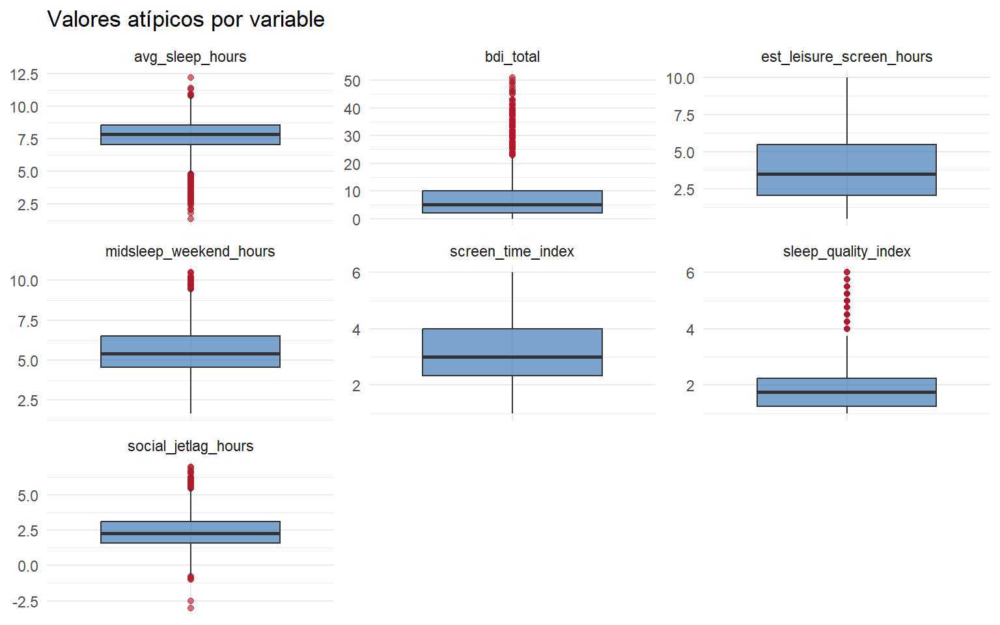
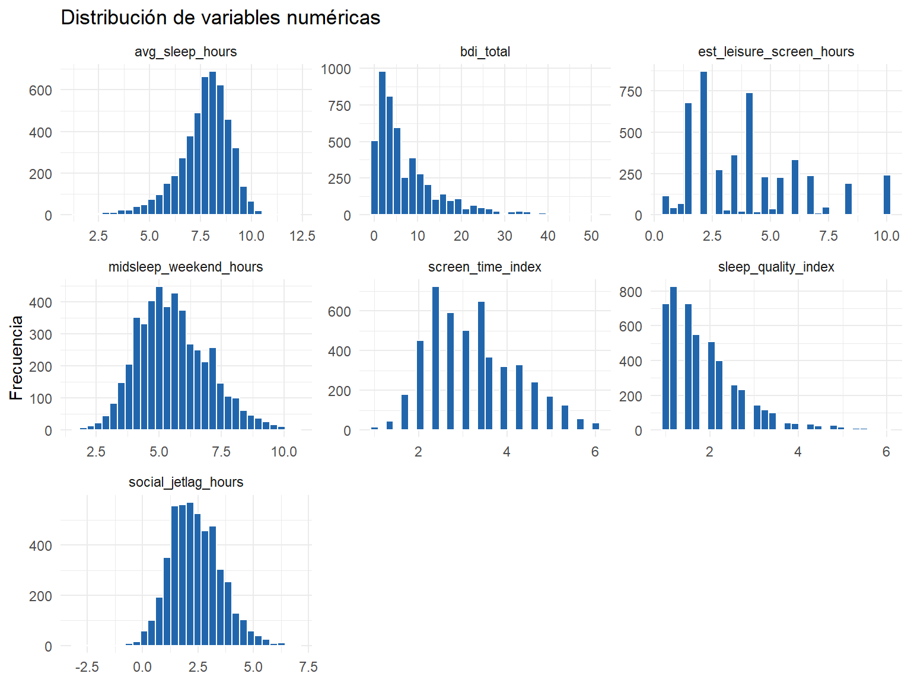
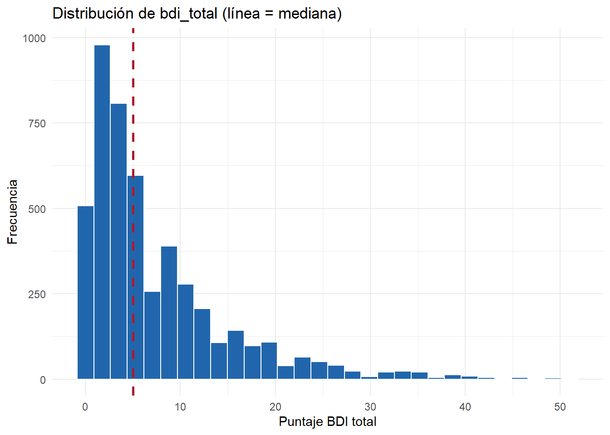
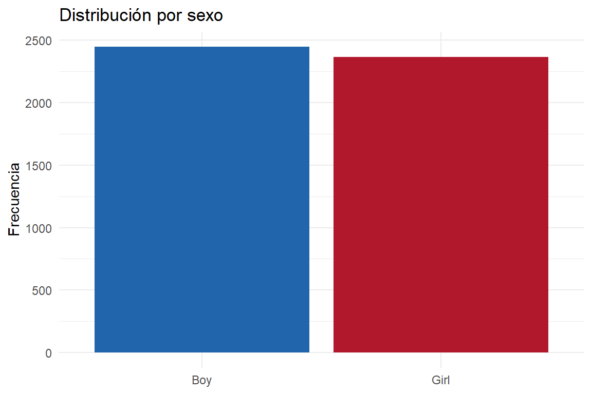
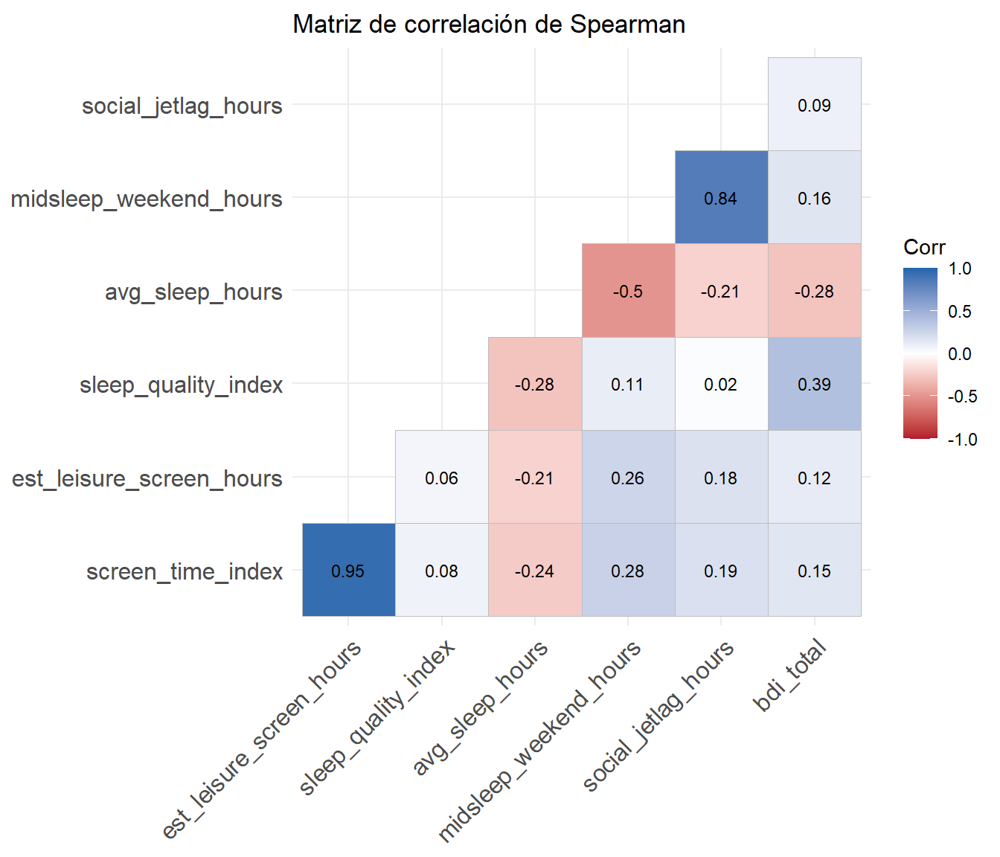
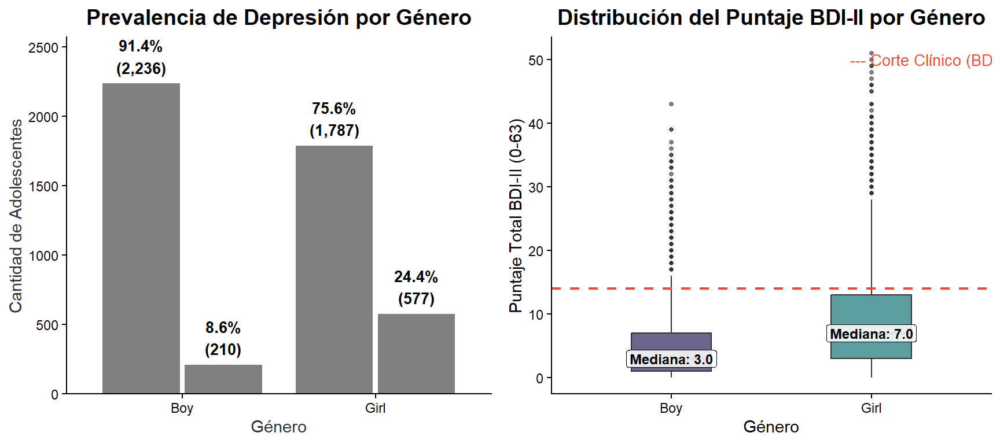

Chapter 3 EDA (Análisis Exploratorio De Datos)
3.1 Comprender el contexto
Pregunta de investigación: ¿el tiempo en pantallas y los patrones de sueño afectan la salud mental de los adolescentes?
Variable objetivo: bdi_total / depressed. Las demás variables numéricas (tiempo de
pantalla, sueño) se tratan como predictoras. Este documento sigue los pasos del EDA:
importar, limpiar, describir (uni y bivariado) y documentar hallazgos. La selección de qué
relaciones profundizar en la sección bivariada se hace calculando la correlación real con
bdi_total, no a partir de una lectura visual de la matriz.
3.3 Importación de datos
## Rows: 4,810
## Columns: 10
## $ subject_id <int> 1, 2, 3, 4, 5, 6, 7, 8, 9, 10, 11, 12, 13, 14, 15, 16, 17, 18, 19, 20, 21, 22, 23,…
## $ sex <chr> "Boy", "Girl", "Boy", "Boy", "Boy", "Boy", "Girl", "Boy", "Girl", "Girl", "Girl", …
## $ screen_time_index <dbl> 3.333, 3.333, 3.333, 4.333, 1.667, 2.333, 2.667, 4.000, 1.667, 4.333, 5.333, 2.333…
## $ est_leisure_screen_hours <dbl> 4.64, 4.07, 4.07, 6.07, 0.50, 2.07, 2.64, 6.79, 1.50, 6.07, 10.00, 2.07, 1.50, 2.0…
## $ sleep_quality_index <dbl> 2.25, 2.50, 2.00, 1.50, 2.50, 1.00, 5.25, 1.00, 1.00, 1.25, 2.25, 3.50, 2.00, 2.50…
## $ avg_sleep_hours <dbl> 8.36, 7.31, 8.75, 8.17, 8.88, 8.51, 7.70, 4.95, 8.45, 5.85, 4.56, 4.00, 8.76, 7.32…
## $ midsleep_weekend_hours <dbl> 4.58, 5.42, 5.50, 6.62, 4.12, 5.00, 5.00, 8.18, 3.83, 7.92, 9.21, 8.50, 4.79, 7.33…
## $ social_jetlag_hours <dbl> 1.92, 2.25, 2.62, 3.96, 1.79, 1.96, 1.62, 2.93, 0.92, 4.54, 4.33, 3.50, 1.88, 2.79…
## $ bdi_total <int> 6, 7, 27, 22, 3, 7, 16, 1, 10, 17, 12, 14, 4, 14, 2, 0, 6, 1, 11, 6, 9, 19, 17, 6,…
## $ depressed <int> 0, 0, 1, 1, 0, 0, 1, 0, 0, 1, 0, 1, 0, 1, 0, 0, 0, 0, 0, 0, 0, 1, 1, 0, 0, 0, 0, 0…Aquí podemos tener una mejor observación de los datos, podemos escoger el valor de variables que queremos observar:
3.4 Limpieza, tratamiento y preparación
3.4.1 Tipos de datos
datoshealth <- datoshealth %>%
mutate(
sex = factor(sex),
depressed = factor(depressed, labels = c("No deprimido", "Deprimido"))
)
str(datoshealth)## 'data.frame': 4810 obs. of 10 variables:
## $ subject_id : int 1 2 3 4 5 6 7 8 9 10 ...
## $ sex : Factor w/ 2 levels "Boy","Girl": 1 2 1 1 1 1 2 1 2 2 ...
## $ screen_time_index : num 3.33 3.33 3.33 4.33 1.67 ...
## $ est_leisure_screen_hours: num 4.64 4.07 4.07 6.07 0.5 2.07 2.64 6.79 1.5 6.07 ...
## $ sleep_quality_index : num 2.25 2.5 2 1.5 2.5 1 5.25 1 1 1.25 ...
## $ avg_sleep_hours : num 8.36 7.31 8.75 8.17 8.88 8.51 7.7 4.95 8.45 5.85 ...
## $ midsleep_weekend_hours : num 4.58 5.42 5.5 6.62 4.12 5 5 8.18 3.83 7.92 ...
## $ social_jetlag_hours : num 1.92 2.25 2.62 3.96 1.79 1.96 1.62 2.93 0.92 4.54 ...
## $ bdi_total : int 6 7 27 22 3 7 16 1 10 17 ...
## $ depressed : Factor w/ 2 levels "No deprimido",..: 1 1 2 2 1 1 2 1 1 2 ...3.4.2 Valores faltantes y duplicados
tibble(
variable = names(datoshealth),
na = colSums(is.na(datoshealth))
) %>%
filter(na > 0) %>%
datatable(options = list(dom = "t"), caption = "Variables con datos faltantes")## [1] 0Observamos que nuestro dataset es muy completo dandonos a entender que está listo para el procesamiento, de esta forma confirmamos que nuestro análisis será mas acertado cuando evaluemos nuestros datos. ### Resumen estadístico inicial
tabla_num <- datoshealth %>%
summarise(
across(
where(is.numeric) & !any_of("subject_id"),
list(
N = ~sum(!is.na(.x)),
Media = ~mean(.x, na.rm = TRUE),
Mediana = ~median(.x, na.rm = TRUE),
SD = ~sd(.x, na.rm = TRUE),
Min = ~min(.x, na.rm = TRUE),
Q1 = ~quantile(.x, 0.25, na.rm = TRUE),
Q3 = ~quantile(.x, 0.75, na.rm = TRUE),
Max = ~max(.x, na.rm = TRUE)
)
)
) %>%
pivot_longer(
everything(),
names_to = c("Variable", ".value"),
names_pattern = "(.+)_(N|Media|Mediana|SD|Min|Q1|Q3|Max)$"
) %>%
mutate(across(where(is.numeric), ~round(.x, 2)))
datatable(tabla_num, options = list(dom = "t"), caption = "Resumen estadístico de variables numéricas")En la siguiente tabla se presenta un resumen descriptivo de las principales variables numéricas del conjunto de datos, incluyendo su media y el intervalo correspondiente al 50 % central de las observaciones.
screen_time_index: presenta una media de 3,22 horas estimadas de uso de pantallas. El 50 % central de los individuos presenta valores entre 2,33 y 4,00 horas, lo que indica una concentración de las observaciones dentro de este intervalo.est_leisure_screen_hours: presenta una media de 3,96 horas estimadas de uso de pantallas durante el tiempo libre. El 50 % central de los individuos se encuentra entre 2,07 y 5,50 horas de uso.sleep_quality_index: presenta una media de 1,90 puntos en el índice de calidad del sueño. El 50 % central de los individuos presenta valores entre 1,25 y 2,25 puntos. Al tratarse de un índice, estos valores representan una puntuación de calidad del sueño y no horas de sueño.avg_sleep_hours: presenta una media de 7,69 horas de sueño promedio. El 50 % central de los individuos registra entre 7,05 y 8,54 horas de sueño, mostrando que la mayor concentración de observaciones se encuentra alrededor de este intervalo.midsleep_weekend_hours: presenta una media de 5,57 horas correspondientes al punto medio del periodo de sueño durante los fines de semana. El 50 % central de los individuos presenta valores entre 4,54 y 6,50 horas.social_jetlag_hours: presenta una media de 2,40 horas de desfase entre los horarios de sueño de los días habituales y los fines de semana. El 50 % central de los individuos presenta un desfase entre 1,58 y 3,12 horas.bdi_total: presenta una media de 7,27 puntos en la escala de síntomas depresivos. El 50 % central de los individuos obtiene puntuaciones entre 2 y 10 puntos. Es importante señalar que esta variable representa una puntuación de síntomas depresivos y no una medida directa de “horas” o de diagnóstico de depresión.
3.4.3 Detección de outliers (método IQR)
En esta tabla podemos ver el número de outliers de cada variable y cual es el porcentaje usando IQR, este indicador permite evaluar qué tan frecuente es la presencia de valores extremos en cada variable.
outliers_iqr <- function(x) {
q1 <- quantile(x, 0.25, na.rm = TRUE)
q3 <- quantile(x, 0.75, na.rm = TRUE)
iqr <- q3 - q1
sum(x < (q1 - 1.5 * iqr) | x > (q3 + 1.5 * iqr), na.rm = TRUE)
}
tabla_outliers <- datoshealth %>%
select(where(is.numeric) & !any_of("subject_id")) %>%
summarise(across(everything(), outliers_iqr)) %>%
pivot_longer(everything(), names_to = "Variable", values_to = "N_outliers") %>%
mutate(Pct_outliers = round(100 * N_outliers / nrow(datoshealth), 2)) %>%
arrange(desc(N_outliers))
datatable(tabla_outliers, options = list(dom = "t"), caption = "Outliers por variable (regla 1.5*IQR)")datoshealth %>%
select(where(is.numeric) & !any_of("subject_id")) %>%
pivot_longer(everything(), names_to = "Variable", values_to = "Valor") %>%
ggplot(aes(x = Variable, y = Valor)) +
geom_boxplot(fill = col_principal, alpha = 0.6, outlier.color = col_secundario) +
facet_wrap(~Variable, scales = "free") +
theme_minimal() +
theme(axis.text.x = element_blank(), axis.ticks.x = element_blank()) +
labs(title = "Valores atípicos por variable", x = NULL, y = NULL)
A partir de los diagramas de caja se observa la presencia de valores atípicos principalmente en las variables relacionadas con el sueño y la salud mental. bdi_total presenta una cantidad considerable de observaciones extremas hacia valores altos, mientras que avg_sleep_hours, sleep_quality_index, midsleep_weekend_hours y social_jetlag_hours también presentan algunos valores alejados del comportamiento central de los datos. Por otro lado, screen_time_index y est_leisure_screen_hours muestran una menor presencia de valores atípicos. Estos valores extremos no necesariamente representan errores en los datos, sino que pueden corresponder a individuos con comportamientos o características diferentes al resto de la muestra, por lo que deben ser evaluados antes de decidir si serán eliminados o conservados en análisis posteriores.
3.5 Análisis descriptivo univariado
3.5.1 Distribución de variables numéricas
datoshealth %>%
select(where(is.numeric) & !any_of("subject_id")) %>%
pivot_longer(everything(), names_to = "Variable", values_to = "Valor") %>%
ggplot(aes(x = Valor)) +
geom_histogram(bins = 30, fill = col_principal, color = "white", na.rm = TRUE) +
facet_wrap(~Variable, scales = "free") +
theme_minimal() +
labs(title = "Distribución de variables numéricas", x = NULL, y = "Frecuencia")
El análisis exploratorio de las variables numéricas revela que los hábitos de sueño (avg_sleep_hours,midsleep_weekend_hours) y el social_jetlag_hours siguen una distribución aproximadamente normal, concentrando a la mayoría de la población en valores promedios centrales.
En contraste, las métricas de salud mental y calidad de sueño (bdi_total y sleep_quality_index) presentan un marcado sesgo a la derecha, lo que indica que la gran mayoría de la muestra reporta niveles bajos de severidad, con solo un pequeño porcentaje de casos atípicos con puntuaciones elevadas. Esto concuerda con la variable depressed, donde la proporción de individuos diagnosticados (1) es significativamente menor en comparación con el grupo de control (0). Finalmente, el tiempo frente a pantalla evidencia comportamientos agrupados en intervalos específicos que convendría profundizar mediante análisis de correlación.
3.5.2 Variable objetivo: depressed / bdi_total
datoshealth %>%
count(depressed) %>%
mutate(Proporcion = scales::percent(n / sum(n))) %>%
datatable(options = list(dom = "t"), caption = "Balance de clase de 'depressed'")ggplot(datoshealth, aes(x = bdi_total)) +
geom_histogram(bins = 30, fill = col_principal, color = "white") +
geom_vline(xintercept = median(datoshealth$bdi_total), color = col_secundario,
linetype = "dashed", linewidth = 1) +
theme_minimal() +
labs(title = "Distribución de bdi_total (línea = mediana)", x = "Puntaje BDI total", y = "Frecuencia")
El análisis del puntaje total del BDI evidencia una distribución con asimetría positiva, donde la mediana se sitúa aproximadamente en 7.27 puntos. Esto refleja que al menos la mitad de la muestra presenta niveles mínimos o nulos de sintomatología depresiva. No obstante, la cola hacia la derecha muestra la presencia de un segmento minoritario de la población con puntuaciones elevadas (mayores a 20 puntos), lo cual justifica analizar a este subgrupo de forma independiente mediante pruebas no paramétricas debido a la falta de normalidad en la variable.3.5.3 Variable categórica: sex
datoshealth %>%
count(sex) %>%
mutate(Proporcion = scales::percent(n / sum(n))) %>%
datatable(options = list(dom = "t"), caption = "Frecuencia de la variable sex")ggplot(datoshealth, aes(x = sex, fill = sex)) +
geom_bar() +
scale_fill_manual(values = paleta_cat) +
theme_minimal() +
theme(legend.position = "none") +
labs(title = "Distribución por sexo", x = NULL, y = "Frecuencia")
3.6 Análisis descriptivo bivariado
3.6.1 Matriz de correlación (Spearman)
predictoras <- c("screen_time_index", "est_leisure_screen_hours",
"sleep_quality_index", "avg_sleep_hours",
"midsleep_weekend_hours", "social_jetlag_hours")
datos_num <- datoshealth %>% select(all_of(predictoras), bdi_total)
mat_cor <- cor(datos_num, use = "complete.obs", method = "spearman")
ggcorrplot(
mat_cor,
type = "lower",
lab = TRUE,
lab_size = 3,
colors = c(col_secundario, "white", col_principal),
title = "Matriz de correlación de Spearman"
)
El análisis de correlación de Spearman revela dos asociaciones lineales de gran magnitud: una fuerte redundancia entre las métricas de uso de pantalla (screen_time_index y est_leisure_screen_hours, \(r = 0.95\)) y una relación directa entre el horario medio de sueño en fines de semana y el jetlag social (\(r = 0.84\)).En cuanto a la salud mental (bdi_total), esta presenta su correlación más significativa con la calidad del sueño (sleep_quality_index, \(r = 0.39\)) y una relación inversa con la duración promedio del sueño (avg_sleep_hours, \(r = -0.28\)). Estos hallazgos sugieren que el deterioro en la calidad y duración del descanso está asociado a mayores niveles de sintomatología depresiva en la muestra.3.6.2 Selección de variables a partir de la correlación real
# correlación de cada predictora con la variable objetivo, ordenada
cor_con_bdi <- mat_cor[predictoras, "bdi_total"] %>%
sort(decreasing = TRUE) %>%
round(3)
datatable(
tibble(Variable = names(cor_con_bdi), Correlacion_con_bdi = cor_con_bdi),
options = list(dom = "t"),
caption = "Correlación de cada predictora con bdi_total (Spearman)"
)top3_predictoras <- names(cor_con_bdi)[order(-abs(cor_con_bdi))][1:3]
# pares de predictoras redundantes entre sí (|r| > 0.8): no deben usarse juntas en un modelo
mat_pred <- mat_cor[predictoras, predictoras]
mat_pred[upper.tri(mat_pred, diag = TRUE)] <- NA
pares_redundantes <- as.data.frame(as.table(mat_pred)) %>%
filter(!is.na(Freq), abs(Freq) > 0.8) %>%
rename(Variable_1 = Var1, Variable_2 = Var2, Correlacion = Freq)
datatable(pares_redundantes, options = list(dom = "t"), caption = "Pares de predictoras redundantes (|r| > 0.8)")El análisis de correlación expone dos pares de variables con un grado crítico de colinealidad: las métricas de pantalla (est_leisure_screen_hours y screen_time_index, \(r \approx 0.95\)) y los indicadores de sueño de fin de semana (social_jetlag_hours y midsleep_weekend_hours, \(r \approx 0.84\)).De cara a la construcción de un modelo predictivo para la variable objetivo bdi_total, la presencia de esta multicolinealidad atenta contra la estabilidad e interpretabilidad de los coeficientes de regresión. Por lo tanto, se concluye la necesidad de realizar una selección previa de variables (feature selection) eliminando un componente de cada par colineal antes del ajuste del modelo final.
3.6.3 Predictoras más asociadas con bdi_total
datoshealth %>%
select(all_of(top3_predictoras), bdi_total) %>%
pivot_longer(all_of(top3_predictoras), names_to = "Variable", values_to = "Valor") %>%
ggplot(aes(x = Valor, y = bdi_total)) +
geom_point(color = col_principal, alpha = 0.3, size = 1) +
geom_smooth(method = "loess", se = TRUE, color = col_secundario, linewidth = 1) +
facet_wrap(~Variable, scales = "free_x") +
theme_minimal() +
labs(title = "Predictoras más asociadas con bdi_total (según Spearman)",
x = NULL, y = "Puntaje BDI total") El análisis de dispersión y tendencias suavizadas confirma que las tres variables presentan una relación clara con el nivel de depresión (bdi_total). La calidad del sueño (sleep_quality_index) muestra un impacto ascendente constante en el rango de 1 a 4 puntos, mientras que la duración habitual del sueño (avg_sleep_hours) evidencia un comportamiento inversamente proporcional, donde dormir menos de 7 horas se asocia con un incremento pronunciado en el BDI.
El análisis de dispersión y tendencias suavizadas confirma que las tres variables presentan una relación clara con el nivel de depresión (bdi_total). La calidad del sueño (sleep_quality_index) muestra un impacto ascendente constante en el rango de 1 a 4 puntos, mientras que la duración habitual del sueño (avg_sleep_hours) evidencia un comportamiento inversamente proporcional, donde dormir menos de 7 horas se asocia con un incremento pronunciado en el BDI.
Por su parte, la hora media de sueño los fines de semana (midsleep_weekend_hours) sugiere que los horarios de descanso muy tardíos se relacionan con mayor sintomatología. Vale destacar que los cambios de tendencia observados en los extremos superiores de las tres variables se acompañan de un ensanchamiento significativo en los intervalos de confianza, lo cual refleja una baja densidad de observaciones en esos rangos y no necesariamente una inversión en la tendencia real.
3.6.4 Interacción con sexo
colores_diagnostico <- c("0" = "#483d8b", "1" = "#5f9ea0")
tabla_sexo <- datoshealth %>%
count(sex, depressed) %>%
group_by(sex) %>%
mutate(
prop = n / sum(n),
label_text = paste0(percent(prop, accuracy = 0.1), "\n(", comma(n), ")")
) %>%
ungroup()
p1 <- ggplot(tabla_sexo, aes(x = sex, y = n, fill = factor(depressed))) +
geom_bar(stat = "identity", position = position_dodge(width = 0.85), width = 0.8) +
geom_text(
aes(label = label_text),
position = position_dodge(width = 0.85),
vjust = -0.3,
size = 3.5,
fontface = "bold",
color = "black"
) +
scale_fill_manual(
values = colores_diagnostico,
labels = c("No Deprimido (0)", "Deprimido (1)"),
name = "Diagnóstico"
) +
scale_y_continuous(expand = expansion(mult = c(0, 0.15))) +
theme_classic() +
labs(
title = "Prevalencia de Depresión por Género",
x = "Género",
y = "Cantidad de Adolescentes"
) +
theme(
plot.title = element_text(hjust = 0.5, face = "bold", size = 14),
axis.title = element_text(color = "#333333"),
legend.position = c(0.85, 0.85),
legend.background = element_blank()
)
medianas <- datoshealth %>%
group_by(sex) %>%
summarise(mediana = median(bdi_total, na.rm = TRUE))
colores_sexo <- c("Boy" = "#6a658d", "Girl" = "#5f9ea0")
p2 <- ggplot(datoshealth, aes(x = sex, y = bdi_total, fill = sex)) +
geom_boxplot(width = 0.4, outlier.size = 1, outlier.alpha = 0.6, color = "#333333") +
# Línea roja discontinua de Corte Clínico
geom_hline(yintercept = 14, color = "#e74c3c", linetype = "dashed", size = 0.8) +
# Cajas de texto con la Mediana
geom_label(
data = medianas,
aes(x = sex, y = mediana, label = paste0("Mediana: ", sprintf("%.1f", mediana))),
fill = "white",
color = "black",
fontface = "bold",
size = 3.2,
label.padding = unit(0.2, "lines"),
alpha = 0.85
) +
# Anotación manual para la leyenda de la línea de corte
annotate(
"text", x = 2.4, y = 50,
label = "--- Corte Clínico (BDI-II ≥ 14)",
color = "#e74c3c", size = 3.5, fontface = "plain"
) +
scale_fill_manual(values = colores_sexo) +
theme_classic() +
labs(
title = "Distribución del Puntaje BDI-II por Género",
x = "Género",
y = "Puntaje Total BDI-II (0-63)"
) +
theme(
plot.title = element_text(hjust = 0.5, face = "bold", size = 14),
legend.position = "none"
)
grid.arrange(p1, p2, ncol = 2)
El análisis bivariado expone una brecha de género estadísticamente relevante en la salud mental de la muestra. En términos categóricos, las adolescentes presentan una prevalencia de depresión casi tres veces superior a la de sus pares masculinos (24.4% frente a 8.6%).Esta tendencia se ratifica al evaluar la variable en su escala continua: la mediana del puntaje BDI-II en chicas (7.0 puntos) duplica la de los chicos (3.0 puntos), mostrando una mayor dispersión hacia puntuaciones elevadas que sobrepasan el corte clínico (\(\ge 14\)). Estos resultados sugieren que el género es un factor determinante a considerar dentro del modelo predictivo para bdi_total.3.7 Documentación de hallazgos
Predictora con mayor correlación con bdi_total: sleep_quality_index (r = 0.393 )
Las top 3 predictoras analizadas en 6.3 fueron: sleep_quality_index, avg_sleep_hours, midsleep_weekend_hours
El dataset no tiene duplicados por
subject_id; los faltantes son mínimos o nulos.La selección de predictoras para el análisis bivariado (sección 6.3) se hizo a partir de la correlación de Spearman real con
bdi_total, no de una lectura visual de la matriz.Los pares de predictoras marcados como redundantes (tabla 6.2) no deberían usarse juntos más adelante en un modelo, por colinealidad.
Los outliers de variables de sueño y de
bdi_totalno se eliminan: son los casos clínicamente más relevantes, no errores.El sexo se asocia con
depressed/bdi_total: hay diferencia visible en proporción de depresión y en la mediana debdi_totalentre grupos.